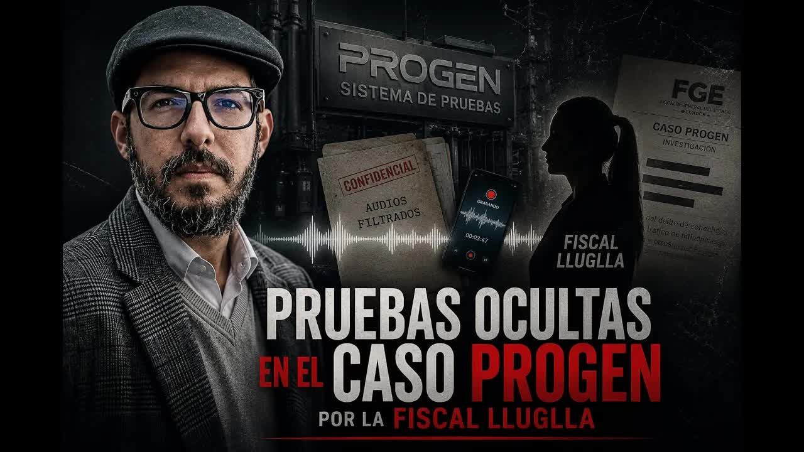
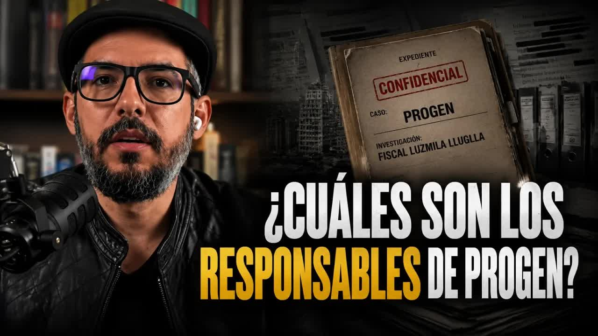
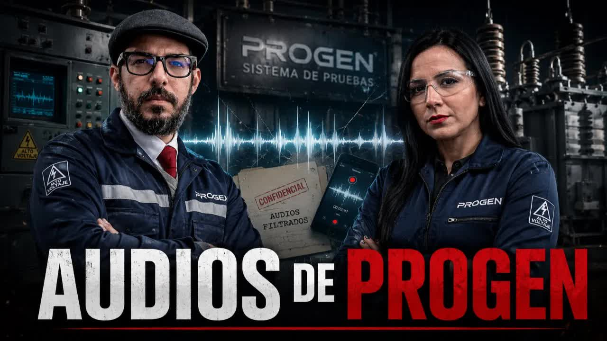
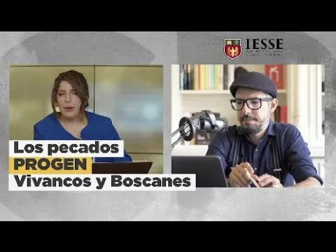
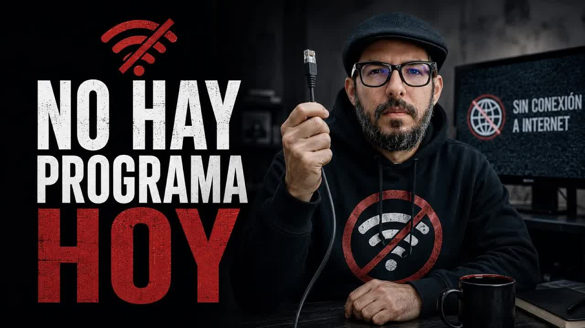
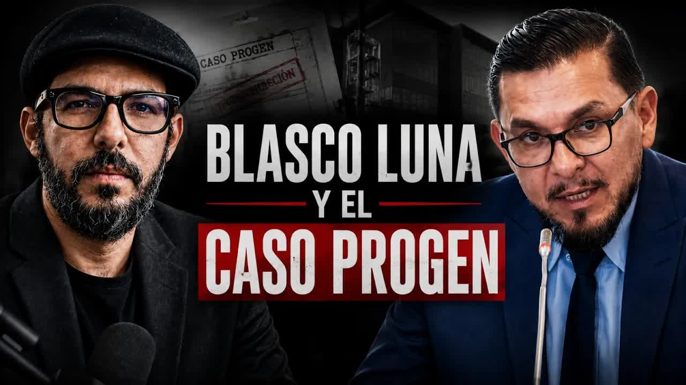

20 may 2026 · Los audios de Villacís y Orozco
Ecuador pagó 149 millones de dólares por generadores de emergencia que resultaron chatarra. Tres técnicos de CELEC viajaron a Houston a verificarlos, grabaron una prueba de vida porque temían por sus vidas y grabaron a escondidas a sus jefes. Entregaron todo a la Fiscalía el 24 de septiembre de 2025. Ocho meses después, la fiscal del caso pedía cárcel para ellos y las pruebas no estaban en el expediente. Boscán y La Moni las publicaron.
| Paso | Recibido por | Fecha | Firma |
|---|---|---|---|
| Entrega | Comisión técnica CELEC | 24 sep 2025 · 12:16 | |
| Recepción | Fiscal L. Lluglla | 24 sep 2025 | |
| Notificación | Fiscal general | sin fecha | |
| Incorporación | Expediente fiscal | sin fecha | |
| Publicación | Boscán y La Moni | 19 y 20 may 2026 |

Hola, estamos en Houston, Estados Unidos, hoy 19 de septiembre de 2024. Así empieza el video. No es una filtración anónima ni un hallazgo de última hora: es una prueba que el Estado ecuatoriano tenía guardada, con acta de entrega y con fecha, desde el 24 de septiembre de 2025, y que no aparecía en el expediente del caso Progen. Tres hombres nerviosos se presentan ante la cámara de un teléfono en una habitación del Hotel Thompson: Nelson Castro, Celso Sánchez y Paul Flores. No son narcos ni pandilleros. Son funcionarios de CELEC, la base de la pirámide, la comisión técnica que el Estado ecuatoriano envió a verificar lo que iba a comprarle a Progen. Uno de ellos no tenía visa; el Estado se la consiguió. Graban para dejar constancia a sus familias, dicen, porque a las seis de la tarde tienen una última reunión con la empresa y de esa reunión depende lo que les pase. Abren la ventana para mostrar dónde están. Ese video estuvo meses en manos de la Fiscalía General del Estado y nadie lo había visto hasta que Mónica Velásquez recibió el contacto y Andersson Boscán lo puso al aire el 19 de mayo de 2026, con marca de agua y sin cortes. Lo que se publicó ese día no fue una revelación de los periodistas: fue una prueba que ya estaba entregada y que alguien había dejado fuera de la causa.
Hemos constatado, verificado, tomado fotografías. Lastimosamente las fotografías nos quitaron, pero queremos dejar constancia que estos equipos no sirven.
Nelson Castro, comisión técnica de CELEC, Houston, 19 de septiembre de 2024
El contexto es la peor crisis de apagones de la historia reciente. Progen Industries LLC, con sede en Florida, apareció por primera vez en diciembre de 2023 con propuestas a la central termoeléctrica que no se concretaron. El 16 de mayo de 2024, un mes después de asumir como ministro encargado de Energía, Roberto Luque viajó a Tampa con su asesor Peter Dreger y con Fabián Calero, gerente subrogante de CELEC, y visitó una empresa que todavía no se llamaba Progen sino HIS Industry LLC. Grabó un video diciendo que iba a verificar y dar fe de la propuesta. Dos meses después la comisión técnica de CELEC firmó el acta de calificación y el 2 de agosto de 2024 se firmaron los contratos: 99 millones por Salitral y 49 por Quevedo, 50 generadores en total, 29 para Guayaquil y 21 para Quevedo. Calero, delegado para firmar, delegó a su vez en Byron Orozco, gerente de Termopichincha. Luque dice que él no firmó. Antonio Gonçalves, ministro entre el 2 de julio y el 9 de octubre de 2024, dice que no visitó Progen y que el proceso ya estaba causado cuando llegó. Calero dice que él tampoco firmó. Es, según Boscán, el primer contrato que se autofirmó en la historia.
Los técnicos revisaron equipos en dos lugares, Apollo Electric y unas instalaciones de General Electric. En la entrada les quitaron los teléfonos por seguridad. El empresario José Manrique, la cara de Progen en Ecuador, les entregó una cámara para que registraran lo que quisieran. Tomaron fotos. La cámara volvió al país casi vacía: quedaron dos o tres. Carla Saud, representante de Progen para Latinoamérica y socia mayoritaria de Astrobrixa, la empresa que recibía los pagos, los recibió con camisetas, gorras y cajas de regalo. Adentro había un celular. Lo entregaron a la Fiscalía sin abrir. En la segunda visita nadie les quitó el teléfono y fotografiaron a escondidas: motores diésel viejos apilados entre tubería y cajas de cartón, cajas eléctricas con la pintura saltada y óxido en las bisagras, equipos al aire libre en un galpón con baños. El 90 % de lo que iban a revisar ya estaba embalado en plástico. Creyeron que eran equipos chatarrizados, pintados al apuro. Sin su verificación el Estado no podía soltar la plata.
Ese mismo septiembre de 2024 Paul Flores denunció en la Fiscalía que un desconocido dejó un panfleto en la cafetería de su esposa, en Conocoto: te tenemos ubicado, ingeniero Flores, a ti y a tu familia la vamos a matar por los contratos de CELEC. La Fiscalía lo acogió en el programa de protección de víctimas y testigos. En Houston viajaban con seguridad armada. Lo que tenían que entregar era un informe que Progen quiso revisar en territorio. La Contraloría, que no se enteró del contrato durante el primer año, calculó después el perjuicio en 100 millones de dólares. Salitral no opera. Quevedo no opera. Alguien decidió que Progen recibiera cerca del 70 % de anticipo, y los pagos se hicieron durante la administración de Inés Manzano. El 14 y el 15 de mayo de 2026 la Fiscalía formuló cargos por peculado contra 21 personas. Entre ellas, Castro, Sánchez y Flores.
| Fecha | Obra o beneficiario | Monto | Ruta del dinero | Registro |
|---|---|---|---|---|
| 2024-08-02 | Contrato Salitral · 29 generadores, 100 MW | $ 99,4 M | CELEC (Termopichincha, gerente Byron Orozco) → Progen Industries LLC, Florida; en Ecuador cobra Astrobrixa (José Manrique y Carla Saud) | Firmado en la gestión del ministro Antonio Gonçalves. Garantía técnica ofrecida: equipos nuevos y sin uso |
| 2024-08-02 | Contrato Quevedo · 21 generadores, 50 MW | $ 49 M | CELEC → Progen Industries LLC | Total de los dos contratos: 149,1 millones. Debían generar desde noviembre de 2024 |
| 2024-09 → 2025 | Anticipo y pagos del contrato de Salitral | $ 69,5 M | CELEC → Progen, vía Astrobrixa. Cerca del 70 % de anticipo, sin garantía que ejecutar | Desembolsos en la gestión de la ministra Inés Manzano, pese a informes que decían que no se debía pagar. Avance real: 73,58 % |
| 2025 | Perjuicio calculado por la Contraloría | $ 100 M | Los generadores: modelo fuera de producción desde 2015 según el fabricante RPG; placas alteradas; equipos repotenciados y pintados | Salitral y Quevedo nunca operaron. Los apagones siguieron |
| 2025-09-24 | Pruebas entregadas a la fiscal Lluglla | — | Comisión técnica → Fiscalía General del Estado, 12:16, Quito: video, audios, teléfonos, correos, un celular regalado sin abrir. Ingresan en cadena de custodia. No entran al expediente | El 19 de mayo de 2026 la FGE admitió que los videos 'al momento no forman parte del expediente fiscal' |
| 2025-06 | Liquidación de CELEC al terminar el contrato | $ 12,4 M | CELEC reclama a Progen multas, garantía técnica de 36 meses (6,9 millones) y saldos | Progen consiguió que un árbitro de emergencia de la Cámara de Comercio Ecuatoriano Americana suspendiera la terminación |
| 2025 | Un rancho para los dueños de Progen | $ 10 M | Salió de los 150 millones pagados por Ecuador, según Boscán | Ecuador no ha logrado congelar el dinero de Progen en Estados Unidos |
El 20 de mayo de 2026 Boscán y La Moni pusieron al aire lo que sigue al video: los audios que los técnicos grabaron con teléfonos escondidos cuando hablaron con sus jefes. El primero es del 20 de septiembre de 2024, un día después del hotel. La comisión pide reunirse con Carlos Villacís, subgerente de CELEC. Le cuentan que les quitaron el teléfono, que la cámara volvió sin fotos, que lo que vieron no tiene cero horas de uso y que tienen miedo. Uno de ellos dice que su familia trabaja en la Contraloría y que a ellos les van a revisar esto. Quieren un informe que diga lo que vieron. Villacís les propone otra cosa: que su criterio se base en la revisión de la verificadora privada, AP Inspections, que ya había recomendado seguir con el proceso, y en una inspección general, número de unidades y poco más. Los técnicos responden que viajaron para mirar un papel que podían haberles mandado por correo.
Yo les soy sincero, la directriz que va a haber, yo ya sé hasta cuál más o menos es: la directriz va a ser que esta huevada no puede caerse. No puede caerse.
Carlos Villacís, subgerente de CELEC, audio del 20 de septiembre de 2024
Villacís insiste en que no hay nada detrás, que él viene a cumplir disposiciones y que cuando uno quiere hacer las cosas hay que hacerlas bien. Los técnicos le dicen que tienen miedo hasta de viajar y le piden que, jurídicamente, haga lo que sea para deslindarlos. Aprovechando que no está el jefe, dicen, confiesan que tienen miedo. El jefe es Byron Orozco, gerente de Termopichincha, la unidad de negocio de CELEC que contrató a Progen. Orozco había viajado con la comisión a Houston y los hizo tomarse una selfie como prueba de que habían viajado juntos. Se presentaba ante la comisión diciendo que tenía muy buenos vínculos en la política, según las fuentes del programa.

El segundo audio es del 2 de abril de 2025. El escándalo ya estalló y la plata ya se pagó. Orozco reúne a la comisión en la oficina central de Electroguayas, en Guayaquil, y ordena recoger los celulares. Pepito, recoge los celulares, se escucha. Uno de los técnicos siguió grabando. Ya no hay marcha atrás, les dice. O se dejan ayudar o se defienden solos. Les da cinco minutos para pensar. Quiere que firmen a mano un alcance al informe que ya está en el expediente y que diga que se verificaron los 29 equipos, que estaban embalados con plástico transparente, que se pudieron revisar las placas y las características técnicas. Los técnicos habían visto seis. Orozco quiere dejar abierta una defensa: que lo que vieron en la bodega era bueno y que lo que llegó a Ecuador fue distinto. Les instruye cómo hablar del administrador del contrato, Marlon Casillas: ni tú le lanzas el muerto al Marlon ni el Marlon a ti. Si tienen dudas, mejor callados. Con Carlos y con Gabi, dice, vamos a estar pendientes de los grupos para intervenir si los ponen contra las cuerdas. Así lo hicimos en Quevedo. Seguimos respondiendo como CELEC, matriz incluida.
O se dejan ayudar o se defienden solos.
Byron Orozco, gerente de Termopichincha, audio del 2 de abril de 2025
Orozco fue imputado por peculado el 14 de mayo de 2026. Villacís está en la lista de 21. La Fiscalía acusa a los tres técnicos como autores de peculado por haber firmado un informe. Lo que no dice es que lo firmaron bajo amenaza de muerte, que denunciaron las amenazas a tiempo, en 2024, y que las pruebas están en sus manos. A la comisión nadie le preguntó por orden de quién firmó ni quién la amenazó. A Orozco y a Villacís nadie les preguntó por estos audios. Para Boscán la lectura es una sola: el robo de Progen no fue solo el de unos estafadores que le vieron la cara al Estado; hubo una cadena de mando que presionó a la base de la pirámide para legitimarlo. Y la Fiscalía pedía prisión para la base.
Son machísimos con los débiles y flojísimos con los fuertes.
Andersson Boscán, 19 de mayo de 2026
La fiscal Luzmila Lluglla Gavilanes recibió el material el 24 de septiembre de 2025, a las 12:16, en Quito: el video del hotel, los audios, teléfonos, correos y comunicaciones completas. Todo ingresó en cadena de custodia. Boscán mostró el documento al aire por si a la fiscal le fallaba la memoria. Lluglla había sido designada para impulsar la investigación por un oficio del 22 de julio de 2025 firmado por Magali Ruiz, coordinadora general de asesoría jurídica de la Fiscalía y hoy representante ante el Consejo de la Judicatura. Es la misma fiscal que, en el caso Encuentro, el que empezó llamándose el Gran Padrino, firmó el dictamen que dejó fuera del proceso a uno de los investigados. Gente cercana a su despacho confirmó al programa que hubo entrevistas de trabajo con al menos uno de los técnicos y promesas a su defensa de que esa información se usaría y no se los procesaría.
Nada de eso pasó. Ocho meses después, con 21 personas ya con cargos, el video y los audios no estaban en el expediente. La noche del 19 de mayo de 2026, tras la primera emisión, la Fiscalía General del Estado publicó un comunicado sobre el proceso penal que llama Apagón: los elementos de convicción que sustentan la acusación están identificados en el expediente y, en ese contexto, se aclara que los videos que circulan en redes sociales al momento no forman parte del expediente fiscal ni constituyen elementos de convicción procesalmente incorporados. Era la confirmación. El equipo del fiscal general Leonardo Alarcón le aseguró a Boscán que Lluglla no lo había notificado de la existencia del material y que Alarcón se enteró viendo el programa. Alarcón era fiscal subrogante y concursaba para quedarse seis años en el cargo.
Video del 19 de septiembre de 2024. Nelson Castro, Celso Sánchez y Paul Flores dejan constancia a sus familias de que los equipos no sirven y de que temen por sus vidas. Publicado íntegro, con marca de agua, el 19 de mayo de 2026.
20 de septiembre de 2024, grabado con un teléfono escondido: la directriz va a ser que esto no puede caerse. Publicado el 20 de mayo de 2026.
2 de abril de 2025. Orozco recoge los celulares y pide un informe a mano sobre 29 equipos que no se vieron: o se dejan ayudar o se defienden solos. Publicado el 20 de mayo de 2026.
Segunda visita: motores diésel viejos apilados entre tubería y cajas de cartón, cajas eléctricas con la pintura saltada y óxido en las bisagras, equipos embalados en plástico.
Las comunicaciones completas de los tres técnicos con sus jefes durante la verificación y después del escándalo.
Recibido en Houston en una caja con camisetas y gorras, de manos de Carla Saud. Entregado a la Fiscalía tal como llegó.
Septiembre de 2024. Un desconocido dejó en la cafetería de la esposa de Paul Flores, en Conocoto, una amenaza de muerte por los contratos de CELEC. La Fiscalía lo acogió como testigo protegido.
Video, audios, teléfonos y correos ingresan en cadena de custodia en Quito. Boscán mostró el documento al aire.
Los escuchó el día que los recibió. Hubo entrevistas de trabajo con al menos un técnico y promesas a su defensa de que la información se usaría.
Nunca fue notificado de la existencia del material. Se enteró viendo el programa, el 19 de mayo de 2026.
El 14 y 15 de mayo de 2026 la Fiscalía formuló cargos contra 21 personas, los tres técnicos incluidos, sin estas pruebas.
El video íntegro y los audios con subtítulos. Esa noche la FGE admitió que el material no forma parte del expediente.
Esto quiere decir que el robo de Progen no es un robo de unos estafadores que le ven la cara al Estado, es un robo que se planifica desde el Estado, y tal vez por eso Lluglla no quería que este audio se hiciera público.
Andersson Boscán, 20 de mayo de 2026
La Fiscalía no preguntó a la comisión quién la amenazó ni por orden de quién firmó, y no interrogó a Villacís ni a Orozco por los audios.
El mismo 19 de mayo, del despacho de Lluglla se filtró otro documento: el oficio en el que ella se abstiene de seguir conociendo el caso porque encontró a alguien con fuero de Corte Nacional, el ministro de Energía Roberto Luque, y debe subir el expediente al fiscal general, el único que litiga en esa unidad. Cuando el caso llegó arriba, el nombre de Luque no estaba. El único de rango ministerial imputado es Antonio Gonçalves, cuya defensa sostiene que lo vincularon para tener un ministro condenado que no sea Luque. Gonçalves apunta a Luque. Luque apunta a los que firmaron. Y la lista de 21 tiene ausencias que Boscán fue nombrando al aire: Marlon Casillas, administrador del contrato; Rommel Calderón, administrador de Salitral; José Manrique, representante de Progen en Ecuador; el CEO de Progen, Manning, que recibió a la delegación ecuatoriana y sigue en Estados Unidos, demandado en Florida pero no procesado en Ecuador. Hay un montón de gente que no está en el baile, dijo Boscán. Vamos a invitarlos a bailar.
El 22 de mayo de 2026 Boscán repasó, uno por uno, el papel de los señalados. Roberto Luque, ministro encargado de Energía desde el 16 de abril de 2024, declaró la emergencia, participó de las fichas técnicas y los términos de referencia, viajó a Tampa y grabó el video que lo persigue; se defiende con que no firmó y con que visitó varios proveedores, y no ha explicado quién escogió los proveedores ni quién invitó a Progen. Peter Dreger, su asesor, viajó con él; la Contraloría encontró indicios en su contra y la Fiscalía no lo incluyó. José Manuel de Oliveira, asesor jurídico del ministerio y delegado de Luque para validar los contratos, tampoco fue incluido pese a los indicios de la Contraloría: en un contrato de 150 millones no hubo garantía que ejecutar. Inés Manzano, ministra de Ambiente encargada luego de Energía, no estuvo en la fase precontractual, pero durante su gestión se dispusieron los pagos, con informes que decían que no había que pagar. No ha sido imputada y es quien demandó a Progen en Estados Unidos.
Lo realmente escandaloso del caso Progen es que se les entregó plata sin garantía y con un anticipo de casi el 70 %. Es decir, dimos millones de dólares a cambio de nada.
Andersson Boscán, 22 de mayo de 2026
Fabián Calero, gerente subrogante de CELEC en la adjudicación, viajó a Tampa, delegó la firma en Orozco porque le dio miedo firmar y, después del desastre, fue ascendido: Manzano se lo llevó de viceministro. Quiso colaborar con la Fiscalía y se echó para atrás. Tiene grabaciones, igual que Orozco, que guarda una en la que informa que no hay que pagar a Progen y finalmente se paga. José Manrique, socio de Astrobrixa, es el primer punto donde se sabe que llegó la plata; tuvo reuniones en el ministerio y compró una casa en San Borondón después de intentar que el vendedor firmara un acuerdo de confidencialidad. No está acusado. Carla Saud, socia mayoritaria, sí. Para Boscán el caso se resuelve dos por dos: se aprieta a Calero y a Orozco, se sienta a Manrique y a Saud, y se sigue la plata.

A comienzos de junio de 2026 la defensa de Calero filtró en Ecuavisa una nota de voz de Inés Manzano. En ella la ministra le dice a su entonces viceministro que el llamado a la Asamblea no es una fiscalización sino un teatro coordinado con la asambleísta oficialista Diana Jácome para no inflar el tema, y le pide que le diga qué quisiera declarar. Manzano no negó que fuera su voz. Jácome, en la Asamblea, dijo que no existe audio ni texto suyo, que es una conversación de terceros, que no es presidenta ni miembro de la Comisión de Fiscalización y que había recibido amenazas, de las que responsabilizó a la Revolución Ciudadana. Boscán le respondió que nadie la acusa de robar sino de fingir que fiscaliza, y que si Manzano miente debería querellarse contra ella. El asambleísta Blasco Luna, de la RC, contó en el programa del 6 de junio que el 2 de julio de 2025 Calero compareció ante la comisión, que él lo encaró y que Jácome le cerró el micrófono, suspendió la sesión y se llevó a Calero a su oficina; que dos veces pidieron la comparecencia de Luque, Manzano, Gonçalves y Félix Wong, y que Jácome no dio paso. Luna y Lenin Barreto, autor de la primera denuncia en Fiscalía en 2024, impulsan el juicio político a Manzano, que el Consejo de Administración Legislativa ya admitió.
Los técnicos que están siendo acribillados por haber presentado las pruebas y que Fiscalía ni siquiera ha considerado como prueba material de este proceso de investigación.
Blasco Luna, asambleísta, 6 de junio de 2026
La revelación tuvo efecto el mismo día. La Fiscalía General del Estado tuvo que reconocer por escrito que las pruebas no estaban en el expediente. El fiscal general se enteró por el programa de que su subordinada las tenía desde septiembre de 2025. La fiscal Luzmila Lluglla cayó del caso Progen. La instrucción, en cambio, sigue igual: 21 procesados por peculado, con los tres técnicos de la comisión entre ellos, y sin Manrique, sin el CEO de Progen, sin Casillas, sin Luque, sin Manzano. Nadie ha respondido quién amenazó a la comisión ni quién dio la directriz de que el contrato no podía caerse.
Mientras tanto, el nuevo ministro de Energía anunció que quiere destrabar el proceso judicial para poner a funcionar los generadores de Progen. Blasco Luna calcula que esa energía costaría entre 20 y 25 centavos el kilovatio hora. Progen no ha devuelto un dólar. Ecuador no ha logrado congelar su dinero en Estados Unidos. Del caso Progen queda sobre todo esto: las pruebas existían, estaban entregadas, firmadas y con recibo, y hubo que sacarlas del despacho de la fiscal para que el país se enterara de que existían.
Actualizado el 5 de septiembre de 2026
Progen envía propuestas a la central termoeléctrica. No se concreta nada.
Asume Energía en plena crisis y declara la emergencia.
Luque viaja con Peter Dreger y Fabián Calero a visitar la empresa que será Progen. Graba un video.
99 millones por Salitral y 49 por Quevedo. Ministro: Antonio Gonçalves. Firma delegada en Byron Orozco.
Castro, Sánchez y Flores graban en el Hotel Thompson de Houston: los equipos no sirven y temen por sus vidas.
Villacís, grabado: esto no puede caerse. Ese mes Flores denuncia un panfleto de amenaza de muerte.
Orozco recoge los celulares y pide un informe a mano: o se dejan ayudar o se defienden solos.
CELEC cierra el contrato con 73,58 % de avance y 69,5 millones pagados; reclama 12,4 millones. Un árbitro suspende la terminación.
Comparece ante la comisión; Jácome cierra el micrófono a Blasco Luna y suspende la sesión.
Oficio de Magali Ruiz: Luzmila Lluglla queda a cargo de la investigación.
A las 12:16, la comisión entrega a Lluglla video, audios, teléfonos y correos. Cadena de custodia.
La Fiscalía formula cargos por peculado contra 21 personas, incluidos los tres técnicos. Las pruebas no están.
Boscán y La Moni publican la prueba de vida. Esa noche la FGE admite que no está en el expediente.
Villacís y Orozco, grabados. El fiscal general se enteró viendo el programa.
Calero filtra la nota de voz sobre el teatro de la fiscalización. El juicio político a Manzano pasa el CAL.
Técnico de CELEC. Inicia la grabación del video en Houston.
Técnico de CELEC. Describió los equipos como chatarra.
Técnico de CELEC. Denunció el panfleto de amenaza en septiembre de 2024.
Subgerente de CELEC. Grabado el 20 de septiembre de 2024: esto no puede caerse.
Gerente de Termopichincha. Firmó los contratos por delegación; grabado el 2 de abril de 2025.
Fiscal del caso desde julio de 2025. Recibió las pruebas y no las incorporó.
Fiscal general subrogante. Se enteró del material viendo el programa.
Ministro encargado de Energía en 2024. Viajó a Tampa a ver a Progen.
Ministro de Energía cuando se firmaron los contratos.
Ministra en cuya gestión se pagó a Progen. Autora del audio del teatro.
Gerente subrogante de CELEC en la adjudicación. Luego viceministro.
Representante de Progen en Ecuador y socio de Astrobrixa, que recibía los pagos.
Representante de Progen para Latinoamérica. Recibió a la comisión con regalos.
Administrador del contrato.
Asambleísta oficialista que condujo la fiscalización de Progen.
Asambleísta de la RC, miembro de la comisión. Proponente del juicio político a Manzano.
Asambleísta de la RC. Presentó la primera denuncia en Fiscalía en 2024.
Recibió el contacto de la fuente y revisó el material.
Publicó el video y los audios los días 19 y 20 de mayo de 2026.
Comunicado del 19 de mayo de 2026: los elementos de convicción que sustentan la acusación están identificados en el expediente; los videos que circulan en redes sociales "al momento no forman parte del expediente fiscal ni constituyen elementos de convicción procesalmente incorporados dentro de esta causa".
Aseguró a Boscán que la fiscal Lluglla no notificó al fiscal general de la existencia del material y que él se enteró viendo el programa.
Que no hay nada detrás, que él viene a cumplir disposiciones y que cuando uno quiere hacer las cosas hay que hacerlas bien.
Que visitó varios proveedores y no solo a Progen, que no firmó el contrato y que ya informó a la Fiscalía. No ha dado entrevista al programa.
Que no visitó Progen, que el proceso ya estaba causado cuando llegó y que a quien hay que preguntarle es a Luque.
Que él tampoco firmó: delegó. Su defensa filtró en Ecuavisa la nota de voz de Inés Manzano.
En la Asamblea: que no hay audio ni texto suyo, que es una conversación de terceros, que no es presidenta ni miembro de la Comisión de Fiscalización y que su patrimonio no se ha inflado. Responsabilizó a la Revolución Ciudadana por amenazas.
Hasta el 3 de junio de 2026 no había reconocido ni negado que la voz del audio fuera la suya.




Hola, estamos en Houston, Estados Unidos. Hoy 19 de septiembre del 2024 dejar constancia a toda la ciudadanía, nuestras familias sobre lo que está ocurriendo sobre estos procesos de contratación en salitral. Mi nombre es Nelson Castro. El compañero pas compañero Coo Sánchezo Sánchez y ¿Qué están viendo? Lo que están viendo es algo que como acostumbro a decirles, no ha visto nadie. Este es un video que ha estado en ma…
Leer la transcripción completaLos capos se visten espantoso como capos. El patucho Celso, Celso Moreira, uno de los más temidos capos del narcotráfico ecuatoriano, por ejemplo, compraba camisas Versache de $,000 o así. las usaba como un arco, usaría una de esas, es decir, con los botones abiertos de más, con el estampado dorado peleándose con la cadena que ya pesaba demasiado como para el cuello y y la medusa mirando al frente como si supiera más…
Leer la transcripción completaSi ayer les mostré el video desde el hotel donde estaban los señores de Selec que viajaron. Hoy lo que van a escuchar es a los superiores de estos señores que viajaron. Estos audios que van a escuchar tienen tres voces importantes. La primera voz es Carlos Villacís, que era a la fecha subgerente SELEC, que está metido en el combo de los 21 procesados. [resoplido] La segunda voz que vas a escuchar es la de Byron Orosc…
Leer la transcripción completaEntonces, hay una emergencia en el país, te llaman, acepta el ministerio, se metió en tremenda bronca Roberto Luke. ¿Qué sabemos de Luke? A ver, déjame ir a mis notas. Luke es la figura pública más relacionada a Progén por algunos comunicados que lo van a perseguir el resto de la vida. Estoy hablando por supuesto de ese momento en el que visita Progen. Él fue ministro encargado de energía y minas desde el 16 de abril…
Leer la transcripción completauna empresa estadounidense, para hacerles un refresh rápidamente, Progen, empresa estadounidense con sede en Florida, firmó un contrato en agosto de 2024 eh con con CELEC para poder generar eh para instalar 150 MW de generación térmica en las centrales de Quevedo y Salitral. 50 en Quevedo, 100 en Salral por un total de eh 149.1 millones de dolaritos. Ya estáamos en pleno apagón, el país estaba desesperado porque hubi…
Leer la transcripción completamañana jueves 4 de junio habrá programa, pero de forma limitada, es decir, o me toca grabarlo, pregrabarlo esta noche o me toca irme a una cafetería o biblioteca en el transcurso del día jueves. Es una pena porque tenía mucho que contar y mucho que decir. El país está muy muy conmocionado después de la publicación de un audio en en Ecuavisa que filtrara la defensa de Fabián Calero. Es un audio que yo yo calculo y les…
Leer la transcripción completaEl audio de Inés Manzano, ese audio revela la participación de Diana Jome. Lo revela por una razón muy sencilla. Es una conversación privada entre Jacome y su entonces entre Manzano y su entonces viceministro, que es hoy un prófugo de la justicia procesado por un caso de corrupción de 100 millones de dólares. Eso es lo que revela el audio en primera instancia. La presentación de Diana me dura 4 minutos. Es increíble.…
Leer la transcripción completay recibo al asambleísta de la RC, eh, Blasco Luna. Es uno de los primeros fiscalizadores que tuvo Progen. Bienvenido, Blasco. ¿Cómo estás? Buenos días, Anderson, saludos. Te agradezco por este espacio para poder conversar. Efectivamente, venimos dando seguimiento a este acto de corrupción desde el año anterior, desde el año 2024 para ser exactos y lamentablemente el gobierno ha tratado de tapar y encubrir todo este p…
Leer la transcripción completaTranscripciones de los subtítulos automáticos de cada programa. No están corregidas a mano: sirven para buscar una frase y llegar al minuto exacto del video, no como cita textual literal.
Comunicado nocturno: los videos no forman parte del expediente.
Luzmila Lluglla sale del caso Progen tras la publicación.
El CAL admite el juicio político a Inés Manzano; pasa a la Comisión de Fiscalización.
El video del Hotel Thompson se publicó íntegro, con marca de agua y sin edición. Los audios fueron grabados por los miembros de la comisión con teléfonos escondidos; los subtítulos reproducen la fuente original.